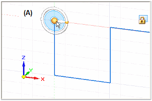
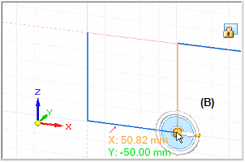
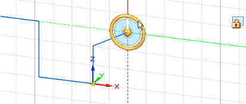
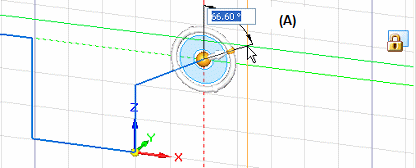
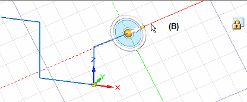

Reposition the sketch plane origin
In synchronous modeling, moving the sketch plane origin also moves the grid origin. You also can change the grid angle.
Move the sketch plane origin
-
Use a drawing command, such as the Line command, to lock the sketch plane where you want to move the origin point.
-
Choose the Reposition Origin command
 .Tip:
.Tip:The sketch plane lock icon must be displayed in the graphics window before you can use the Reposition Origin command.
-
Click the origin of the steering wheel (A).

-
Click a new location for the origin point (B).
The location point can be any point, keypoint, or edge. Valid keypoints include Point On Element keypoints.

The origin X and Y intersecting lines are moved to the new location. When you select a sketching command, you can see the coordinate readout is reset to zero (C).
 Tip:
Tip:You can use the grid intersections to define a new origin point if the Snap To Grid option is set on the Grid Options dialog box.
Change the grid angle
-
Choose the Reposition Origin command
.Tip:The sketch plane lock icon must be displayed in the graphics window before you can use the Reposition Origin command.
-
Click the torus of the steering wheel.

-
Specify the grid angle by typing a value in the box (A) or by clicking in the graphics window (B).


The grid angle display aligns with the change in the sketch plane X and Y axes.
-
When moving the sketch plane origin, you also can change the sketch plane orientation to keep dimensions horizontal and vertical with respect to coplanar geometry that has a different orientation. Click the steering wheel torus, and then click a sketch element or model edge to align the X axes.
To see an example, see Set sketch plane horizontal and vertical for dimensioning.
-
You can use the Zero Origin command to automatically reset the sketch plane origin to the center of the currently locked sketch plane, which is the (0,0,0) coordinate.